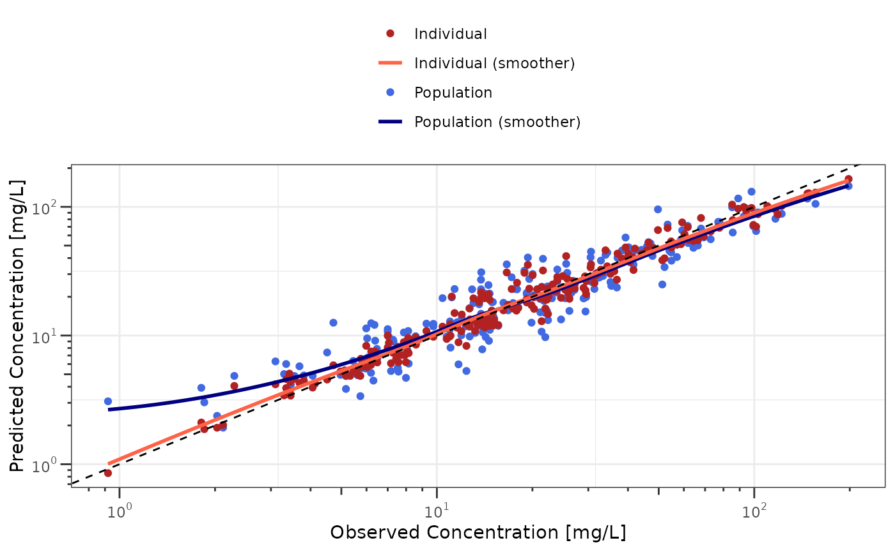

GOF Analysis
gof-analysis.Rmd
library(nonmem.utils)Preamble
Goodness-of-fit (GOF) analysis is a key diagnostic tool used to evaluate how well a PopPK model describes the observed data. It helps determine whether the model is appropriate, reliable, and suitable for prediction
To perform such analysis, Nonmem result file (e.g. .tab
file) must include usual Nonmem variables such as PRED,
IPRED, CWRES and NPDE.
Such variables do not need to defined in the meta data dictionary as
PRED and IPRED will use the dv
type for labelling.
Interactive analysis
To analyse interactively Nonmem results you can use the shiny app below:
nonmem.utils::run_shiny("gof-analysis")Quarto Report
To create a docx report of the GOF analysis you can use the quarto based function below:
nonmem.utils::report_gof_analysis(
data_path = "my/dataset.tab",
meta_data_path = "my/dictionary.csv"
)Available analyses
Observed vs predicted
The function dv_preds() plots observed vs individual and
population predictions in both linear and log scales.
dv_preds(data_501, meta_data_501)
#> Warning in geom_rug(data = dplyr::filter(fill_nonmem_vars(data),
#> .data[[variable_names$mdv]] == : Ignoring unknown aesthetics:
#> text
#> Warning in geom_point(mapping = aes(y = PRED, text = tooltip_text(.data, :
#> Ignoring unknown aesthetics: text
#> Warning in geom_point(mapping = aes(y = IPRED, text = tooltip_text(.data, :
#> Ignoring unknown aesthetics: text
To obtain the plot in log-log scale, the function
gg_log() can be used as illustrated below:
dv_preds(data_501, meta_data_501) |>
gg_log()
#> Warning in geom_rug(data = dplyr::filter(fill_nonmem_vars(data),
#> .data[[variable_names$mdv]] == : Ignoring unknown aesthetics:
#> text
#> Warning in geom_point(mapping = aes(y = PRED, text = tooltip_text(.data, :
#> Ignoring unknown aesthetics: text
#> Warning in geom_point(mapping = aes(y = IPRED, text = tooltip_text(.data, :
#> Ignoring unknown aesthetics: text
Residuals
To assess residual distributions, 3 functions are available:
residual_hist(), residual_qq() and
residual_plot().
- The function
residual_hist()plots histogram of residuals
residual_hist(y_type = "cwres", data = data_501, meta_data = meta_data_501)
- The function
residual_qq()perform QQ-plots of residuals
residual_qq(y_type = "cwres", data = data_501, meta_data = meta_data_501)
- The function
residual_plot()plots residuals vs another variable to analyze potential trends
patchwork::wrap_plots(
residual_plot(x_type = "time", y_type = "cwres", data = data_501, meta_data = meta_data_501),
residual_plot(x_type = "pred", y_type = "cwres", data = data_501, meta_data = meta_data_501)
)
#> Warning in simpleLoess(y, x, w, span, degree = degree, parametric = parametric,
#> : pseudoinverse used at 0.885
#> Warning in simpleLoess(y, x, w, span, degree = degree, parametric = parametric,
#> : neighborhood radius 11.115
#> Warning in simpleLoess(y, x, w, span, degree = degree, parametric = parametric,
#> : reciprocal condition number 8.2288e-17
#> Warning in simpleLoess(y, x, w, span, degree = degree, parametric = parametric,
#> : There are other near singularities as well. 365.38
#> Warning: The following aesthetics were dropped during statistical transformation: text.
#> ℹ This can happen when ggplot fails to infer the correct grouping structure in
#> the data.
#> ℹ Did you forget to specify a `group` aesthetic or to convert a numerical
#> variable into a factor?
#> The following aesthetics were dropped during statistical transformation: text.
#> ℹ This can happen when ggplot fails to infer the correct grouping structure in
#> the data.
#> ℹ Did you forget to specify a `group` aesthetic or to convert a numerical
#> variable into a factor?
Individual time profiles
To review individual time profiles, the functions
ind_time_profiles() and ind_tad_profiles() can
be used as illustrated below. The functions leverage simple 1-, 2-, and
3-compartment models using the mrgsolve package and PK
parameters Nonmem naming convention (e.g. if dataset includes only
CL and V, the code assumes a 1-compartment
model).
ind_time_profiles(
data = data_501 |> dplyr::filter(ID <= 6),
meta_data = meta_data_501
)
#> Warning in geom_rug(data = dplyr::filter(tp_data, .data[[variable_names$blq]] >
#> : Ignoring unknown aesthetics: text
#> Warning in geom_line(data = filter(sim_data, ID %in% selected_ids), mapping =
#> aes(x = TIME, : Ignoring unknown aesthetics: text
#> Warning in geom_point(mapping = aes(y = PRED, text = tooltip_text(.data, :
#> Ignoring unknown aesthetics: text
#> Warning in geom_point(mapping = aes(y = IPRED, text = tooltip_text(.data, :
#> Ignoring unknown aesthetics: text
#> Warning in geom_point(mapping = aes(y = .data[[variable_names$dv]], text =
#> tooltip_text(.data, : Ignoring unknown aesthetics: text
#> [[1]]
ind_tad_profiles(
data = data_501 |> dplyr::filter(ID <= 6),
meta_data = meta_data_501
)
#> Warning in geom_rug(data = dplyr::filter(tp_data, .data[[variable_names$blq]] >
#> : Ignoring unknown aesthetics: text
#> Warning in geom_line(data = filter(sim_data, ID %in% selected_ids), mapping =
#> aes(x = tad, : Ignoring unknown aesthetics: text
#> Warning in geom_point(mapping = aes(y = PRED, text = tooltip_text(.data, :
#> Ignoring unknown aesthetics: text
#> Warning in geom_point(mapping = aes(y = IPRED, text = tooltip_text(.data, :
#> Ignoring unknown aesthetics: text
#> Warning in geom_point(mapping = aes(y = .data[[variable_names$dv]], text =
#> tooltip_text(.data, : Ignoring unknown aesthetics: text
#> [[1]]